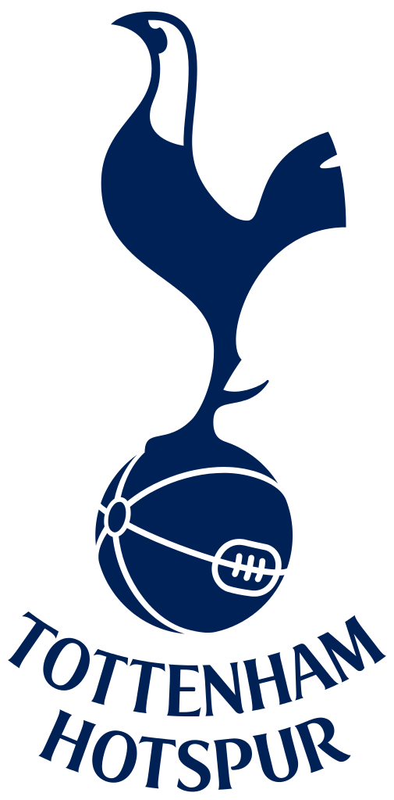

Trent Alexander-Arnold
Débuts
Quoi de plus logique que défendre les couleurs du club de sa ville. Mais surtout de sa vie. L'histoire d'amour a commencé en 2004. Trent Alexander-Arnold n'était alors qu'un jeune garçon âgé d'à peine six ans. Le mioche se prit progressivement de passion pour Liverpool et son parcours dantesque en Ligue des champions cette saison-là. Rappelez-vous, l'exercice 2004-2005 qui voyait Liverpool être sacré champion d'Europe à l'issue d'une finale de folie face à l'AC Milan. C'est dans ce contexte que le jeune Trent Alexander-Arnold revêtait la tunique des Scousers et intégrait le centre de formation du club de la Mersey. L'arrière droit a donc gravi tous les échelons pendant plus dix ans, avant d'atteindre enfin le but de sa vie : fouler la pelouse d'Anfield avec l'équipe première. Et ne plus être le simple gamin qui attrapait la main de Jamie Carragher dans le tunnel de l'antre des Reds.
Ce 25 octobre 2016 restera sans doute à jamais graver dans sa mémoire. Quelques jours seulement après avoir soufflé sa dix-huitième bougie, Trent Alexander-Arnold vivait son dépucelage dans le monde professionnel. Jürgen Klopp, en poste depuis plus d'un an déjà, offrait au natif de Liverpool l'occasion de se faire les griffes avec la liquette des Scousers. C'était lors d'un huitième de finale de League Cup, à Anfield. Et face à Tottenham, déjà. Avec son numéro 66 si significatif floqué sur le dos, Trent Alexander-Arnold s'illustrait par sa prestation solide. Et en prime, les Reds se qualifiaient au bénéfice d'une victoire logique (2-1). Un bon présage pour Trent-Alexander Arnold et ses coéquipiers en vue de la finale de C1.
25/10/16

VS
Liverpool FC 2-1 Tottenham Hotspurs
Liverpool: Daniel Sturridge 9',64'
Tottenham: Vincent Janssen 76'(P)